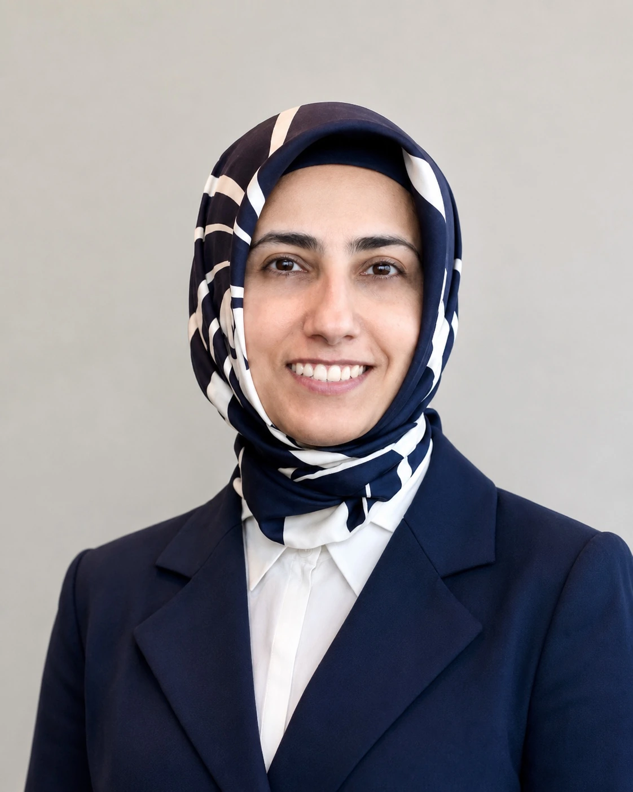

Current role
Lecturer in Human Factors
Safety and Accident Investigation Centre, Cranfield University
About
System safety scientist and human factors specialist.
I am a Lecturer in Human Factors in the Safety and Accident Investigation Centre at Cranfield University. My research and teaching focus on system safety, human factors, accident analysis and risk assessment.

Research focus
My work examines how hazards, controls, decisions and performance variability are shaped across human, technical, organisational and regulatory levels.
I use and develop systems-based methods for research in aviation, healthcare, rail, and AI-enabled or autonomous operations. The analysis is explicit about evidence, assumptions, system boundaries and method limitations.
Selected profile
This page gives a concise profile. Further details about publications and institutional responsibilities are available through the linked profiles.
Current role
Safety and Accident Investigation Centre, Cranfield University
Professional recognition
Chartered Ergonomist and Human Factors Specialist; Fellow of the Higher Education Academy
Editorial work
Deputy Editor, BMJ Health & Care Informatics; Co-Editor-in-Chief, Risk Management and Healthcare Policy; Editorial Board Member, Ergonomics
Academic foundation
PhD in Engineering, University of Cambridge; MSc in Systems Engineering Management, University College London; BEng in Industrial Engineering, Sakarya University
Research areas
Risk assessment frameworks, risk matrices, sepsis treatment, drug administration, safety culture and incident reporting.
Unstable approaches, runway safety, AI-enabled UAV operations, hydrogen aviation and emerging operational concepts.
FRAM-based risk analysis, performance variability and system-based modelling in transport operations.
LLMs, machine learning, human-AI interaction and system safety assessment.
Continue exploring
Browse research-informed guides and method notes, or review the available forms of collaboration and applied support.